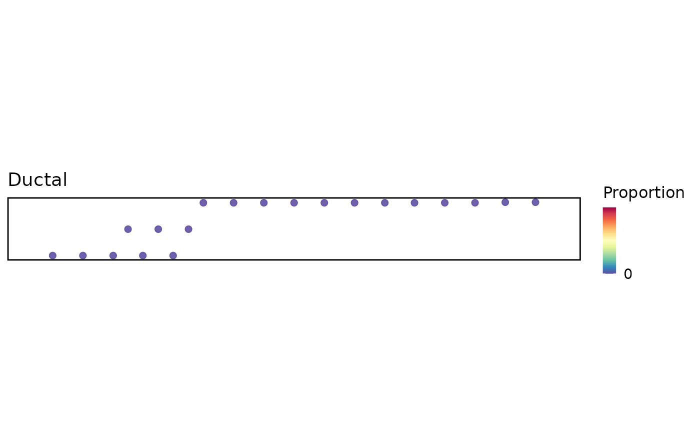

Plot stored spatial deconvolution proportions
Source:R/SpatialDeconvolutionPlot.R
SpatialDeconvolutionPlot.RdPlot spot-by-cell-type proportions stored by RunRCTD(), RunCARD(),
RunSPOTlight(), or RunSpatialDWLS(). The plot reads a schema-v1 result
through GetSpatialResult() and never reruns a deconvolution backend.
RunCSIDE() is intentionally excluded because its output represents
differential or context effects rather than cell-type proportions.
Usage
SpatialDeconvolutionPlot(
srt,
tool_name = NULL,
cell_types = NULL,
plot_type = c("point", "dominant", "pie"),
combine = TRUE,
nrow = NULL,
ncol = NULL,
byrow = TRUE,
...
)Arguments
- srt
A spatial
Seuratobject containing a stored deconvolution result.- tool_name
Exact key in
srt@tools. IfNULL, exactly one compatible stored result must be discoverable.- cell_types
Optional cell types to display. The default uses all stored cell types.
- plot_type
Plot proportions as separate point maps, one dominant-type map derived from the stored proportions, or one spot-level pie map.
- combine
Whether to combine point maps. If
FALSE, return a named list.- nrow, ncol, byrow
Point-map layout controls. When both dimensions are
NULL, a near-square layout with at most three columns is used.- ...
Additional arguments passed to
SpatialSpotPlot().
Examples
data(visium_human_pancreas_sub)
data(pancreas_sub)
shared <- head(intersect(
rownames(visium_human_pancreas_sub),
rownames(pancreas_sub)
), 40)
spatial <- RunSpatialDWLS(
visium_human_pancreas_sub[shared, 1:20],
reference = pancreas_sub,
reference_label = "CellType",
features = shared,
coord.cols = c("x", "y"),
normalize = FALSE,
verbose = FALSE
)
#> Warning: Not validating Centroids objects
#> Warning: Not validating Centroids objects
#> Warning: Not validating FOV objects
#> Warning: Not validating FOV objects
#> Warning: Not validating FOV objects
#> Warning: Not validating FOV objects
#> Warning: Not validating FOV objects
#> Warning: Not validating FOV objects
#> Warning: Not validating Seurat objects
SpatialDeconvolutionPlot(
spatial,
tool_name = "SpatialDWLS",
cell_types = colnames(spatial@tools$SpatialDWLS$proportions)[1],
overlay_image = FALSE,
coord.cols = c("x", "y")
)
